Meet the cast.
Scout searches. Purse holds the authority. Eight fictional writers make their promises. Receipt and Ledger show what happened. 48 poses · shared vector parts · light theme.
QA artwork only. Coins, locks, verification stamps and ledger ticks here are illustrations of states, not live payment or escrow evidence. Ledger hash text is a placeholder.
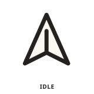
Scout
idleScout
clarifyingScout
searching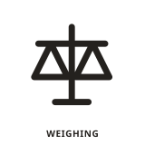
Scout
weighing Scout
Scout
payingScout
verifying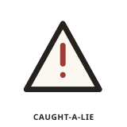
Scout
caught-a-lieScout
doneScout
stopped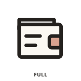
Purse
full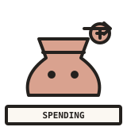
Purse
spendingPurse
refunded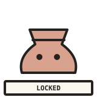
Purse
locked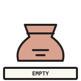
Purse
empty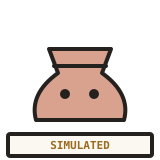
Purse
simulatedAlphaLeak
listeningAlphaLeak
paidAlphaLeak
verifiedAlphaLeak
sneaky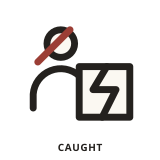
AlphaLeak
caughtAlphaLeak
refundingBasis Points
listeningBasis Points
paidBasis Points
verifiedKopi Contrarian
listeningKopi Contrarian
paidKopi Contrarian
verifiedLoad Factor
listening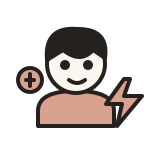
Load Factor
paid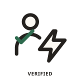
Load Factor
verifiedMarketPulse Digest
listeningMarketPulse Digest
paidMarketPulse Digest
verified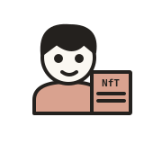
NotFinancialTimes
listening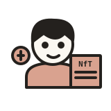
NotFinancialTimes
paid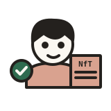
NotFinancialTimes
verifiedOpen Records
listeningOpen Records
paidOpen Records
verifiedThe Fab Floor
listeningThe Fab Floor
paidThe Fab Floor
verifiedReceipt
printingReceipt
verifiedReceipt
refunded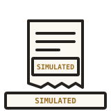
Receipt
simulated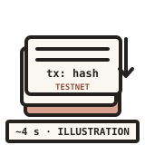
Ledger
closingLedger
closed